第4讲 · 一元函数微分学的计算
据《张宇考研数学基础30讲·高等数学分册（2026版）》整理 · 覆盖原书 P166–P185
本讲导读
上一讲讲概念，这一讲全在算——书里开篇明义："上一讲讲概念，这一讲讲计算，要学会熟练地计算"（印P166）。求导计算是整本书的基本功：后面的积分、微分方程，第一步都跟它有关，书里那句"倒着背就是后面的积分公式"不是玩笑。大纲对本讲的要求有三条（印P166）：一是掌握导数的四则运算法则和复合函数的求导法则、掌握基本初等函数的导数公式，了解微分的四则运算法则和一阶微分形式的不变性，会求函数的微分；二是了解高阶导数的概念，会求简单函数的高阶导数；三是会求分段函数的导数，会求隐函数和由参数方程所确定的函数（仅数学一、数学二）的导数。张宇圈的重难点是复合函数、分段函数、隐函数三处的导数，高阶导数则是区分度题型（书里标了三星）。建议顺序：先把基本公式背到不假思索，再逐个过关第2至9节的八类求导法（四则、复合、分段、反函数、隐函数、参数、对数、幂指），最后死磕高阶导数三法——归纳、莱布尼茨、泰勒展开。每类方法都有固定套路，认出类型就能做对。
站注·真题大数据：导数计算在近15年真题里属于第一梯队考点——几乎每年必考且年年都考，与几何应用合并统计更是高数分值最大的一块；高频题型正是本讲的复合、隐函数、参数方程求导与高阶导数（莱布尼茨）。
知识框架
- 计算的根基（第1–2节）
- 基本求导公式表（倒着背就是后面的积分公式）
- 手写批注三条：\((a^x)^{(n)}=a^x(\ln a)^n\)、\([\ln|u|]'=\frac{u'}{u}\)、反双曲正弦
- 四则运算法则
- 导数版与微分版各一套（填空题常问 \(\mathrm{d}y\)）
- 三因式推广 \([uvw]'\)；超过三个因式另辟蹊径（例4.1）
- 基本求导公式表（倒着背就是后面的积分公式）
- 八类求导法（第2–9节，按函数形态选方法）
- 复合函数（链式法则）
- \(f'[g(x)]\) 与 \(\{f[g(x)]\}'\) 的区别
- 一阶微分形式不变性 \(\mathrm{d}y=f'(u)\mathrm{d}u\)
- 分段函数
- 分段点：定义求左右导数，相等才可导
- 非分段点：直接套公式
- 绝对值函数先去绝对值化分段（例4.6）
- 反函数
- 一阶 \(\frac{\mathrm{d}x}{\mathrm{d}y}=\frac{1}{\mathrm{d}y/\mathrm{d}x}\)
- 二阶 \(\varphi''(y)=-\frac{f''(x)}{[f'(x)]^3}\)（要背）
- 隐函数
- 两边对 \(x\) 求导，\(y\) 是中间变量
- 求 \(y''\) 先代已知点值化简（例4.8）
- 参数方程（数一数二）
- 一阶 \(\frac{\psi'(t)}{\varphi'(t)}\)
- 二阶：对 \(t\) 求导再除 \(\frac{\mathrm{d}x}{\mathrm{d}t}\)（"把 \(t\) 拉进来"）
- 对数求导法（相乘、相除、开方、乘方）
- 幂指函数 \(u^v=\mathrm{e}^{v\ln u}\)（公式不要记，直接求导）
- 复合函数（链式法则）
- 高阶导数（第10节，三星区分度）
- 归纳法（\(\sin x\) 通项，例4.14）
- 莱布尼茨公式（低次幂截断，例4.17、4.18）
- 泰勒展开比系数（含收敛域，例4.19）
- 课后习题4（4.1–4.9）
- 计算点值（4.1 反解 \(g(1)\)）
- 关系式归纳（4.5 \(f'=\mathrm{e}^f\)）
- 双法对照（4.8 \(x^2\ln(1+x)\)）
核心概念与定理
一、基本求导公式表
这张表没有捷径，背到不假思索——书里原话"以下公式要熟记"（印P167）。表上的主角：\((x^{\alpha})'=\alpha x^{\alpha-1}\)（批注：\(\alpha\) "拿下来"）、\((a^x)'=a^x\ln a\ (a>0,\,a\neq1)\)、\((\mathrm{e}^x)'=\mathrm{e}^x\)、\((\log_a x)'=\dfrac{1}{x\ln a}\)、\((\ln x)'=\dfrac1x\)、\((\sin x)'=\cos x\)、\((\cos x)'=-\sin x\)、\((\tan x)'=\sec^2x\)、\((\cot x)'=-\csc^2x\)、\((\sec x)'=\sec x\tan x\)、\((\csc x)'=-\csc x\cot x\)，以及反三角四条 \((\arcsin x)'=\dfrac{1}{\sqrt{1-x^2}}\)、\((\arccos x)'=-\dfrac{1}{\sqrt{1-x^2}}\)、\((\arctan x)'=\dfrac{1}{1+x^2}\)、\((\operatorname{arccot}x)'=-\dfrac{1}{1+x^2}\)——反正切与反余切差一个负号，配对记。
三条手写批注值得抄进笔记：其一，对 \(a^x\) 连续求导就能看出规律 \((a^x)^{(n)}=a^x(\ln a)^n\)；其二，\([\,\ln|u(x)|\,]'=\dfrac{u'(x)}{u(x)}\)——\(\ln|x|\) 求导"视绝对值符号而不见"；其三，反双曲正弦那条 \(\left[\ln\left(x+\sqrt{x^2+1}\right)\right]'=\dfrac{1}{\sqrt{x^2+1}}\) 也顺手记住，例4.2 直接用。
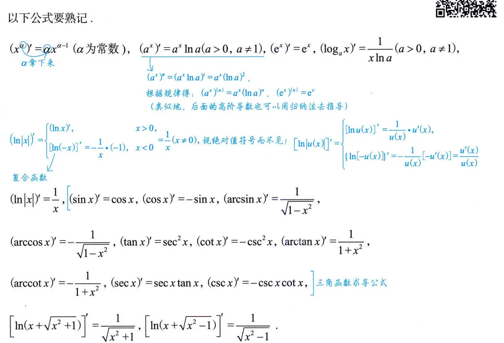
二、四则运算法则：导数与微分各一套
\[ [u\pm v]'=u'\pm v',\qquad [uv]'=u'v+uv',\qquad \left[\frac{u}{v}\right]'=\frac{u'v-uv'}{v^2}\quad (v\neq 0). \]
微分版把撇号换成 d 即可：\(\mathrm{d}(u\pm v)=\mathrm{d}u\pm\mathrm{d}v\)，\(\mathrm{d}(uv)=v\,\mathrm{d}u+u\,\mathrm{d}v\)，\(\mathrm{d}\!\left(\dfrac{u}{v}\right)=\dfrac{v\,\mathrm{d}u-u\,\mathrm{d}v}{v^2}\)。书里的提醒很实际：微分形式也要记，填空题问的就是 \(\mathrm{d}y\) 等于什么（印P168）。三因式照此推广：\([uvw]'=u'vw+uv'w+uvw'\)；因式超过三个就别硬求导，另辟蹊径（典型就是例4.1）。另外乘积公式的定义法证明（加减一项 \(v(x+\Delta x)\) 拆极限）2015 年考过，考场上写得出就赚了。
三、复合函数的导数与一阶微分形式不变性
链式法则（印P169）：设 \(u=g(x)\) 在点 \(x\) 处可导，\(y=f(u)\) 在点 \(u=g(x)\) 处可导，则复合函数在 \(x\) 处可导，且
\[ \{f[g(x)]\}'=f'[g(x)]\cdot g'(x). \]
看清求导符号的位置：\(\{f[g(x)]\}'\) 是整体对 \(x\) 求导，\(f'[g(x)]\) 是对中间变量求导，两码事。链式法则像剥洋葱：\(y\to u\to x\)，每层导数相乘，考试最多剥三层。微分形式的不变性是这讲的主角：\(\mathrm{d}y=f'(u)\,\mathrm{d}u\)，\(u\) 是自变量还是中间变量都成立（印P169）。用法是"先设中间变量、先写微分、最后再除 \(\mathrm{d}x\)"，例4.2、例4.4 连续演示这条路。书里八个字的要求："要认识规则，严守规则"。
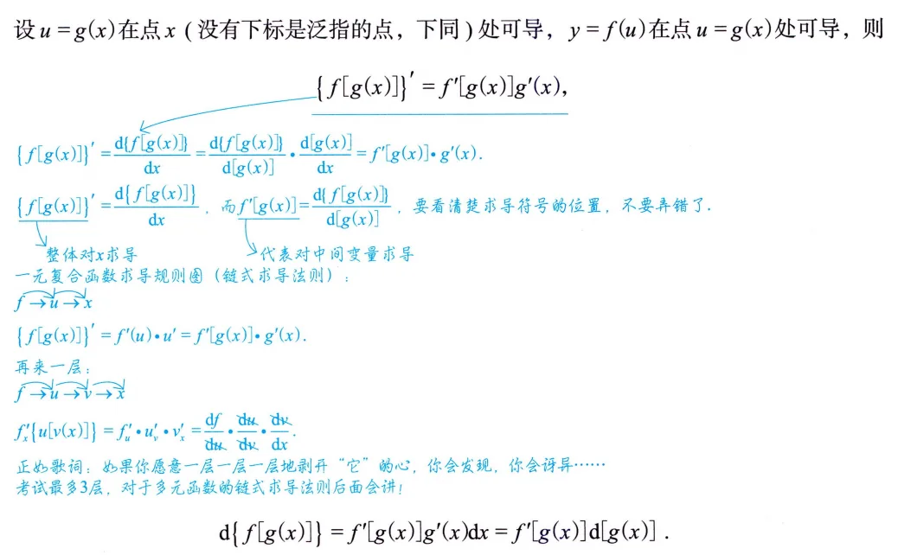
四、分段函数的导数
设 \(f(x)=\begin{cases}f_1(x),&x\geqslant x_0,\\ f_2(x),&x<x_0,\end{cases}\) 两条规矩（印P171）：分段点 \(x_0\) 处用导数定义求左右导数 \(f'_\pm(x_0)=\lim\limits_{x\to x_0^\pm}\dfrac{f_{1,2}(x)-f(x_0)}{x-x_0}\)，二者相等才有 \(f'(x_0)\)；非分段点直接套公式。含绝对值的函数先去绝对值化成分段函数再动手，分段点照样用定义验证（例4.6）。
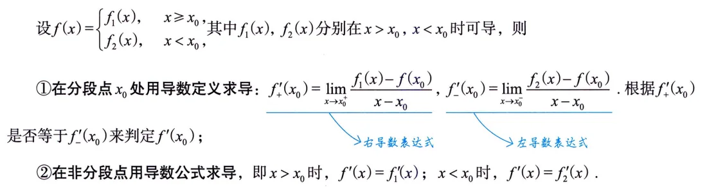
五、反函数的导数
\(y=f(x)\) 单调、可导且 \(f'(x)\neq 0\)，则存在反函数 \(x=\varphi(y)\)，且 \(\dfrac{\mathrm{d}x}{\mathrm{d}y}=\dfrac{1}{\mathrm{d}y/\mathrm{d}x}\)（印P172）。二阶导要当公式背（书里标了"重要"）：
\[ \varphi''(y)=-\frac{f''(x)}{[f'(x)]^3}. \]
书里用 \(y=\arcsin x\) 的反函数 \(x=\sin y\) 当场推了一遍 \((\arcsin x)'=\dfrac{1}{\sqrt{1-x^2}}\)，正好演示这公式怎么来的。用二阶公式的两个易错点：负号、三次方，一个都不能少；代入的是与 \(y\) 对应的那个 \(x\) 值。
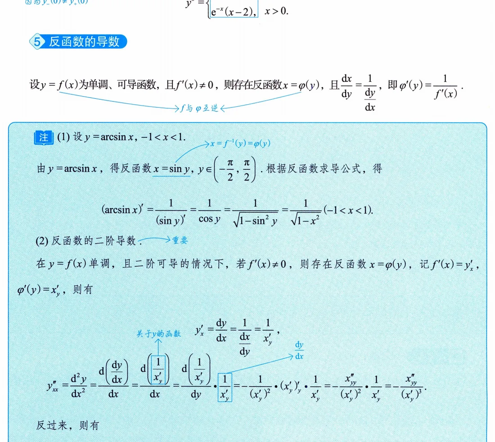
六、隐函数求导法
方程 \(F(x,y)=0\) 确定 \(y=y(x)\) 时，不必（往往也不能）解出显式：两边对 \(x\) 求导，把 \(y\) 当中间变量（涉及复合求导），得到关于 \(y'\) 的方程，解出 \(y'\) 即可（印P173）。要 \(y''\) 就对求导后的方程再来一遍，中途把已知条件（比如 \(y'(1)=0\)）代进去，式子会瘦很多（见例4.8）。两个常用小公式：\((y^2)'=2yy'\)，\((xyy')'=yy'+xy'y'+xyy''\)。
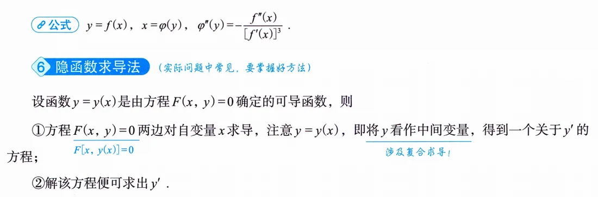
七、参数方程所确定的函数的导数
\[ \frac{\mathrm{d}y}{\mathrm{d}x}=\frac{\mathrm{d}y/\mathrm{d}t}{\mathrm{d}x/\mathrm{d}t}=\frac{\psi'(t)}{\varphi'(t)},\qquad \frac{\mathrm{d}^2y}{\mathrm{d}x^2}=\frac{\mathrm{d}\left(\dfrac{\mathrm{d}y}{\mathrm{d}x}\right)/\mathrm{d}t}{\mathrm{d}x/\mathrm{d}t}. \]
一阶公式直接比；二阶公式书里注明"不要背，会推就行"（印P174）——核心动作是认清 \(\dfrac{\mathrm{d}y}{\mathrm{d}x}\) 是 \(t\) 的函数，对 \(t\) 求导之后还要除以 \(\dfrac{\mathrm{d}x}{\mathrm{d}t}\)，书里管这步叫"把 \(t\) 拉进来"。若要展开成分式，即
\[ \frac{\mathrm{d}^2y}{\mathrm{d}x^2}=\frac{\psi''(t)\varphi'(t)-\psi'(t)\varphi''(t)}{[\varphi'(t)]^3}, \]
同样建议现场推而不是背。注意：参数方程求导大纲只要求数学一、数学二（印P166）。
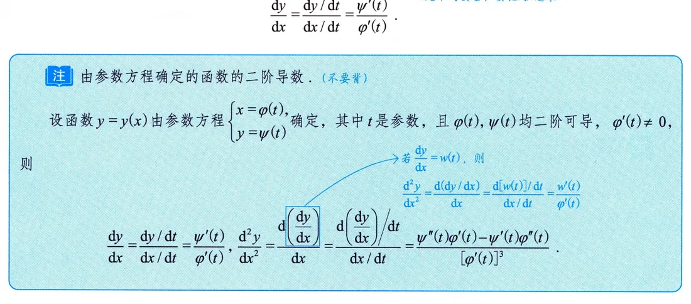
八、对数求导法
多个函数相乘、相除、开方、乘方的式子，先取对数再求导（印P175）。设 \(y=f(x)\)：两边取对数得 \(\ln y=\ln f(x)\)，再两边对 \(x\) 求导（\(y\) 是中间变量）得 \(\dfrac{y'}{y}=[\ln f(x)]'\)，于是 \(y'=y\,[\ln f(x)]'\)。若 \(f(x)<0\) 就取 \(\ln|f(x)|\)，照样有 \([\ln|f(x)|]'=\dfrac{f'(x)}{f(x)}\)（绝对值"视而不见"再次登场）。乘除变加减，复杂式子立刻清爽——例4.12 的三因式开方就是标准客户。
九、幂指函数求导法
\(u(x)^{v(x)}\)（\(u(x)>0\) 且 \(u(x)\neq 1\)）先化成指数函数 \(u^v=\mathrm{e}^{v\ln u}\)，再按复合函数求（印P175–176）：
\[ \left[u(x)^{v(x)}\right]'=u(x)^{v(x)}\left[v'(x)\ln u(x)+v(x)\cdot\frac{u'(x)}{u(x)}\right]. \]
书里旁批原话："公式不要记，直接求导"——现场化 \(\mathrm{e}^{v\ln u}\) 比背公式可靠。幂指函数绝不能套幂函数或指数函数的单公式：底数、指数都在动，两项都得要，例4.11、例4.13 连做两题就是这个意思。
十、高阶导数的概念与归纳法
\(f''=(f')'\)，\(n\ge 2\) 时称高阶导数（印P177）。归纳法的动作：逐次求导、探索规律、写出通式，解答题再用数学归纳法收尾。样板是 \(\sin x\)——要借诱导公式把 \(\cos x\) 化成同名函数再找规律（例4.14）：
\[ y'=\cos x=\sin\left(x+\frac{\pi}{2}\right),\quad y''=\sin\left(x+2\cdot\frac{\pi}{2}\right),\quad\cdots,\quad y^{(n)}=\sin\left(x+\frac{n\pi}{2}\right). \]
常用高阶导数表（\(n\) 为正整数）值得抄一遍贴墙上，记不住也要会现场推（印P177）：
\[ (\mathrm{e}^{ax+b})^{(n)}=a^n\mathrm{e}^{ax+b},\qquad [\sin(ax+b)]^{(n)}=a^n\sin\left(ax+b+\frac{n\pi}{2}\right), \]
\[ [\cos(ax+b)]^{(n)}=a^n\cos\left(ax+b+\frac{n\pi}{2}\right),\qquad [\ln(ax+b)]^{(n)}=(-1)^{n-1}a^n\frac{(n-1)!}{(ax+b)^n}, \]
\[ \left(\frac{1}{ax+b}\right)^{(n)}=(-1)^n a^n\frac{n!}{(ax+b)^{n+1}}. \]
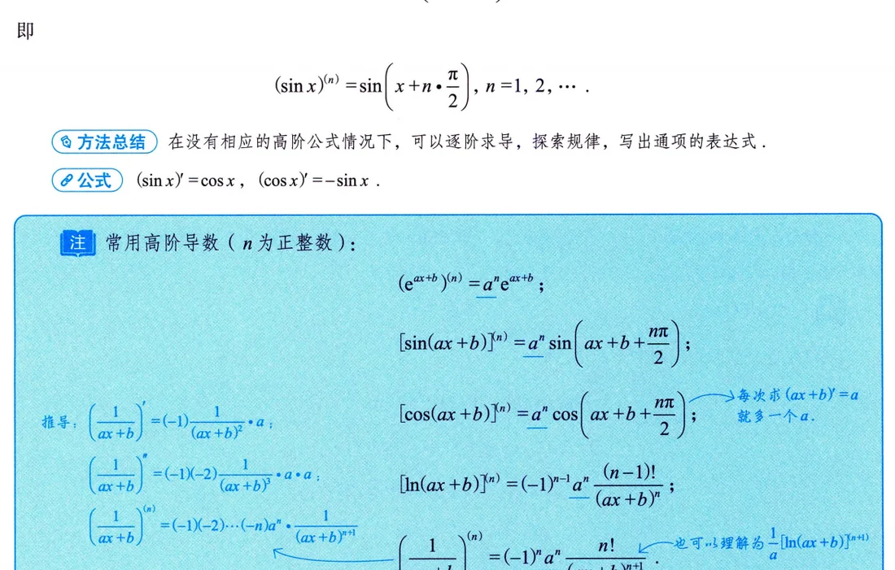
十一、莱布尼茨公式
\[ (uv)^{(n)}=\sum_{k=0}^{n}C_n^k\,u^{(n-k)}v^{(k)}\quad(\text{共 } n+1 \text{ 项}), \]
与二项式定理同构，把 \(k\) 次方换成 \(k\) 阶导（印P179）。考研主要考乘积形式，固定套路：把低次幂函数（\(x\)、\(x^2\)）放在其中一边，它导几次就变成 0，\(n+1\) 项的和式只剩前两三项——例4.17、例4.18 连续演示这个技巧，习题4.8 还让你用泰勒法再验一遍。
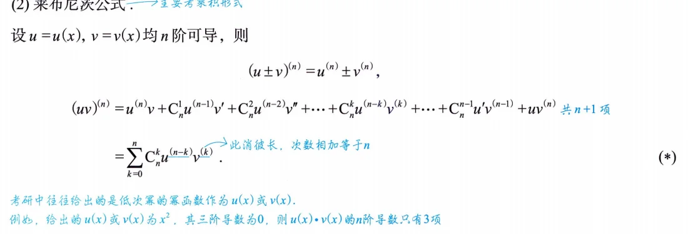
十二、泰勒展开法求 n 阶导数
无穷阶可导的函数可写成 \(f(x)=\sum\limits_{n=0}^{\infty}\dfrac{f^{(n)}(x_0)}{n!}(x-x_0)^n\)，由"展开式的唯一性"，把具体函数按已知公式展开后比较 \(x^n\) 的系数，就得到 \(f^{(n)}(x_0)\)（印P180）。最常用 \(x_0=0\)：\(f^{(n)}(0)=n!\times\)(\(x^n\) 的系数)。常用泰勒展开式连收敛域一起记（\(\arctan x\) 的 \([-1,1]\)、\(\ln(1+x)\) 的 \((-1,1]\) 与其他几个开区间不同，书里特意标出）：
\[ \mathrm{e}^{x}=\sum_{n=0}^{\infty}\frac{x^n}{n!}\ \big(|x|<+\infty\big),\qquad \sin x=\sum_{n=0}^{\infty}(-1)^n\frac{x^{2n+1}}{(2n+1)!}\ \big(|x|<+\infty\big), \]
\[ \cos x=\sum_{n=0}^{\infty}(-1)^n\frac{x^{2n}}{(2n)!}\ \big(|x|<+\infty\big),\qquad \arctan x=\sum_{n=0}^{\infty}(-1)^n\frac{x^{2n+1}}{2n+1}\ \big(x\in[-1,1]\big), \]
\[ \ln(1+x)=\sum_{n=1}^{\infty}(-1)^{n-1}\frac{x^n}{n}\ \big(-1<x\leqslant 1\big),\qquad \frac{1}{1-x}=\sum_{n=0}^{\infty}x^n\ \big(-1<x<1\big), \]
\[ \frac{1}{1+x}=\sum_{n=0}^{\infty}(-1)^n x^n\ \big(-1<x<1\big),\qquad \frac{1}{1+x^2}=\sum_{n=0}^{\infty}(-1)^n x^{2n}\ \big(-1<x<1\big). \]
书里旁批："要熟记，记不住也要会现推"（印P180–181）。另有顺手批注 \((2^x)^{(n)}=2^x(\ln 2)^n\)——例4.19 把 \(2^x\) 变形为 \(\mathrm{e}^{x\ln 2}\) 用的正是它。
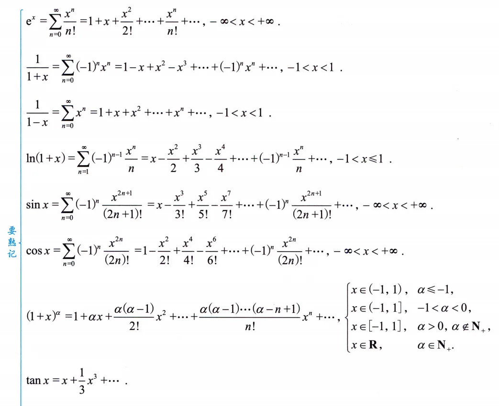
典型例题精讲
例4.1 多因式相乘：化"经典形式"
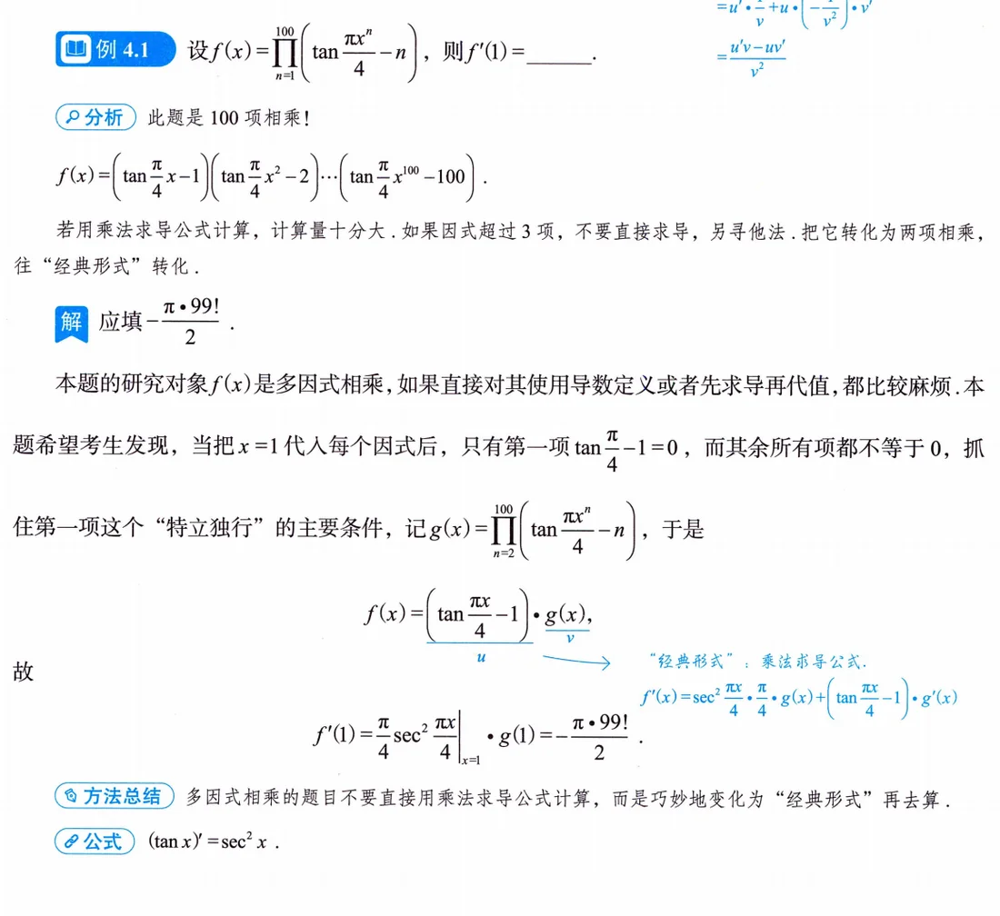
思路 \(f(x)=\prod\limits_{n=1}^{100}\left(\tan\dfrac{\pi x^n}{4}-n\right)\) 求 \(f'(1)\)。100 个因式相乘，硬套乘法公式必死。把 \(x=1\) 代进每个因式，只有第一项 \(\tan\frac{\pi}{4}-1=0\)，其余全不为 0——拎出这个"特立独行"的第一项，记 \(g(x)=\prod\limits_{n=2}^{100}\left(\tan\dfrac{\pi x^n}{4}-n\right)\)，化成两项相乘。
要点 \(f(x)=\left(\tan\dfrac{\pi x}{4}-1\right)\cdot g(x)\)，求导后代 \(x=1\)：带 \(g'(1)\) 的那项因为乘了 \(\left(\tan\frac{\pi}{4}-1\right)=0\) 而消失，只剩
\[ f'(1)=\frac{\pi}{4}\sec^2\frac{\pi x}{4}\Bigg|_{x=1}\cdot g(1)=\frac{\pi}{4}\cdot 2\cdot(-99!)=-\frac{\pi\cdot 99!}{2}. \]
注 张宇这题的套路：多因式相乘不要直接用乘法公式，先转化成"经典形式"（两项相乘）再算。
例4.2 复合函数求微分：反双曲正弦的来历
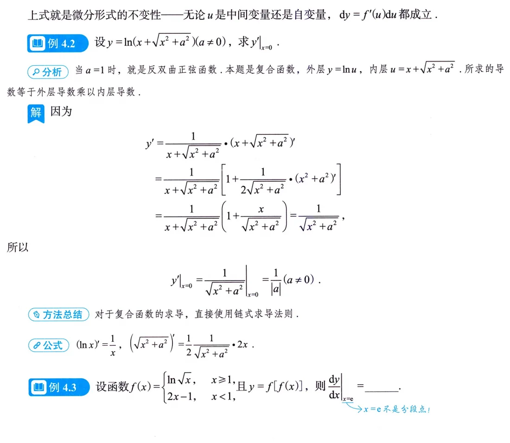
思路 \(y=\ln\left(x+\sqrt{x^2+1}\right)\) 求 \(\mathrm{d}y\)。两层复合：外层 \(\ln u\)，内层 \(u=x+\sqrt{x^2+1}\)。先用微分形式不变性写 \(\mathrm{d}y=\dfrac{1}{u}\mathrm{d}u\)，别急着展开。
要点 \(\mathrm{d}u=\left(1+\dfrac{x}{\sqrt{x^2+1}}\right)\mathrm{d}x=\dfrac{x+\sqrt{x^2+1}}{\sqrt{x^2+1}}\,\mathrm{d}x=\dfrac{u}{\sqrt{x^2+1}}\,\mathrm{d}x\)，分子恰好就是 \(u\)，约掉得
\[ \mathrm{d}y=\frac{\mathrm{d}x}{\sqrt{x^2+1}}. \]
注 这就是公式表里反双曲正弦那条 \(\left[\ln\left(x+\sqrt{x^2+1}\right)\right]'=\dfrac{1}{\sqrt{x^2+1}}\) 的推导现场；"先约简、最后除 \(\mathrm{d}x\)"是微分形式不变性的标准打法。
例4.3 分段函数的复合：求点值不求表达式
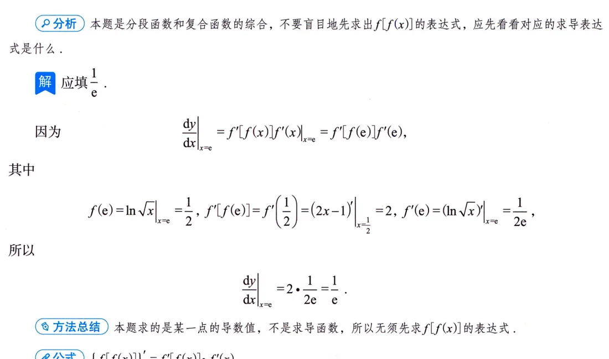
思路 \(f(x)=\begin{cases}\ln\sqrt{x},&x>\mathrm{e},\\ 2x-1,&x\leqslant\mathrm{e},\end{cases}\) \(y=f[f(x)]\)，求 \(\dfrac{\mathrm{d}y}{\mathrm{d}x}\Big|_{x=\mathrm{e}}\)。这是求导数值，不要盲目先拼出 \(f[f(x)]\) 的表达式，先写求导链条：\(\{f[f(x)]\}'=f'[f(x)]\cdot f'(x)\)。
要点 \(f(\mathrm{e})=\ln\sqrt{\mathrm{e}}=\dfrac12\)；\(\mathrm{e}\) 不是分段点，而 \(\dfrac12\) 落在 \(2x-1\) 段，故 \(f'\left(\dfrac12\right)=2\)；\(f'(\mathrm{e})=(\ln\sqrt{x}\,)'\big|_{x=\mathrm{e}}=\dfrac{1}{2\mathrm{e}}\)。答案 \(2\cdot\dfrac{1}{2\mathrm{e}}=\dfrac{1}{\mathrm{e}}\)。
注 关键动作：先看"求导表达式是什么"，再看代进去落在哪一段。
例4.4 先求微分再求导
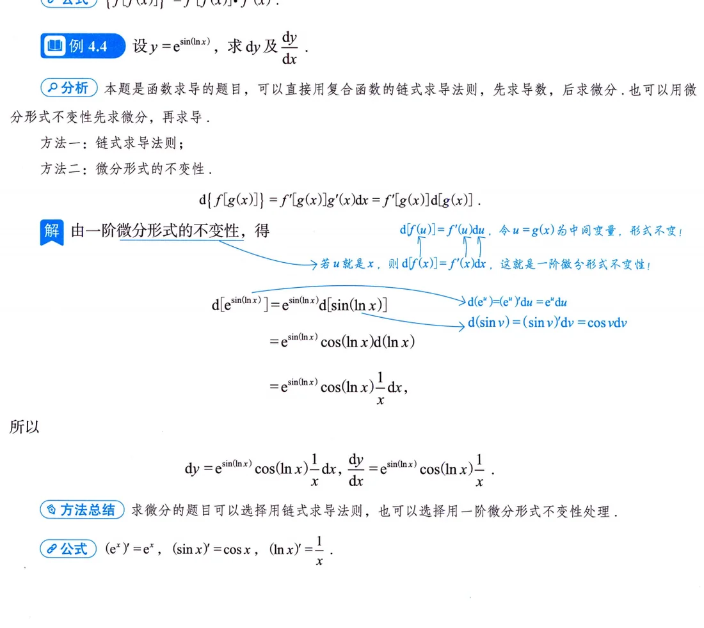
思路 \(y=\ln\left(\sqrt{1+\mathrm{e}^{x}}+\sqrt{1+\mathrm{e}^{-x}}\right)\ (x>0)\) 求 \(\mathrm{d}y\)。结构三层套，硬写撇号必乱；设 \(u=\sqrt{1+\mathrm{e}^{x}}+\sqrt{1+\mathrm{e}^{-x}}\)，全程用微分形式不变性。
要点 \(\mathrm{d}y=\dfrac{1}{u}\,\mathrm{d}u\)，而
\[ \mathrm{d}u=\frac{1}{2}\left(\frac{\mathrm{e}^{x}}{\sqrt{1+\mathrm{e}^{x}}}-\frac{\mathrm{e}^{-x}}{\sqrt{1+\mathrm{e}^{-x}}}\right)\mathrm{d}x, \]
代回去即得答案（可再通分整理成单个分式，考试写等价形式即可）。
注 本题示范"求 \(\mathrm{d}y\) 不求 \(y'\)"的路线：每层只写 \(\mathrm{d}(\ln u)=\mathrm{d}u/u\) 这类局部微分，最后才拼装——填空题问 \(\mathrm{d}y\) 时这是最稳的写法。
例4.5 分段函数：分段点用定义判决
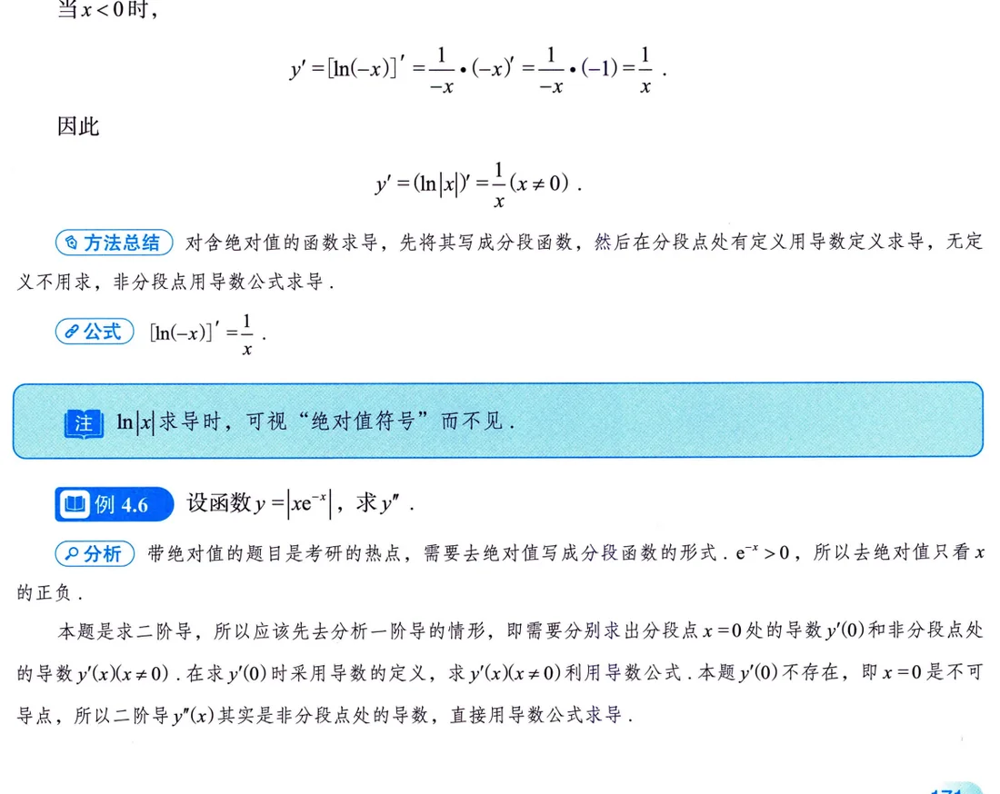
思路 \(f(x)=\begin{cases}\mathrm{e}^{2x},&x\geqslant 0,\\ \cos x,&x<0,\end{cases}\) 求 \(f'(x)\)。非分段点直接套公式，分段点 \(x=0\) 必须用定义算左右导数。
要点 \(x<0\) 时 \(f'(x)=-\sin x\)；\(x>0\) 时 \(f'(x)=2\mathrm{e}^{2x}\)；在 \(x=0\) 处
\[ f'_+(0)=\lim_{\Delta x\to 0^+}\frac{\mathrm{e}^{2\Delta x}-1}{\Delta x}=2,\qquad f'_-(0)=\lim_{\Delta x\to 0^-}\frac{\cos\Delta x-1}{\Delta x}=0, \]
左右导数不相等，\(f'(0)\) 不存在。
注 别看两段曲线"连着"就默认可导——连续推不出可导，分段点的判决书永远是左右导数。
例4.6 绝对值函数的二阶导
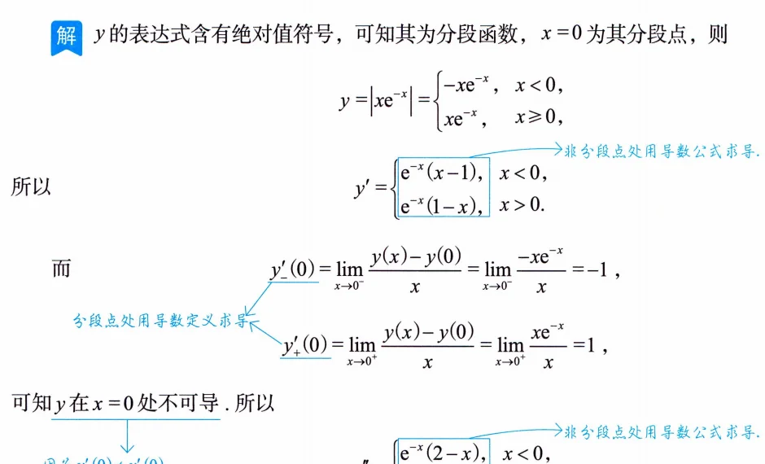
思路 \(y=|x\mathrm{e}^{-x}|\)，\(\mathrm{e}^{-x}>0\)，去绝对值只看 \(x\) 的正负，化成分段函数。分段点 \(x=0\) 用定义求左右导数，非分段点用公式。
要点 \(y'_-(0)=\lim\limits_{x\to 0^-}\dfrac{-x\mathrm{e}^{-x}}{x}=-1\)，\(y'_+(0)=1\)，左右不等，\(x=0\) 不可导，所以二阶导只在非分段点用公式：
\[ y''=\begin{cases}\mathrm{e}^{-x}(2-x), & x<0,\\ \mathrm{e}^{-x}(x-2), & x>0.\end{cases} \]
注 一阶导不存在的点谈不上二阶导——先把一阶导的全貌（哪里有、哪里没有）摸清楚。
例4.7 反函数二阶导套公式
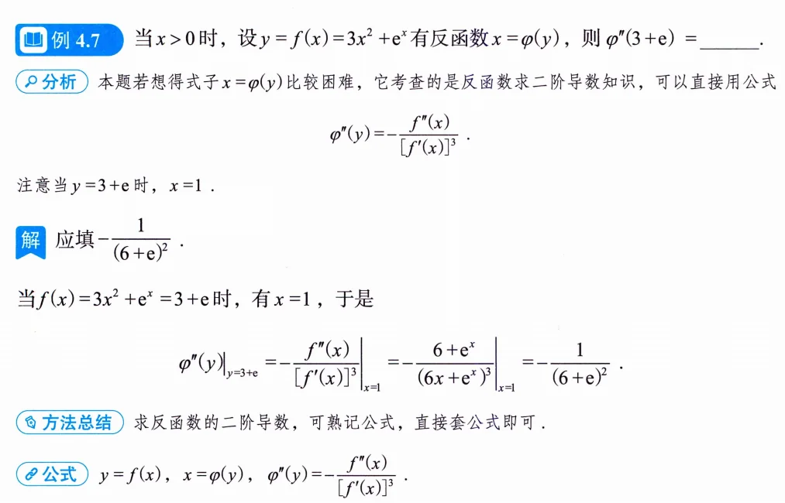
思路 \(x>0\) 时 \(y=f(x)=3x^2+\mathrm{e}^x\) 有反函数 \(x=\varphi(y)\)，求 \(\varphi''(3+\mathrm{e})\)。别想着把 \(x=\varphi(y)\) 解出来，直接套 \(\varphi''(y)=-\dfrac{f''(x)}{[f'(x)]^3}\)。先由 \(3x^2+\mathrm{e}^x=3+\mathrm{e}\) 定出对应的 \(x=1\)（\(x>0\) 时左边单调）。
要点 \(\varphi''(3+\mathrm{e})=-\dfrac{6+\mathrm{e}^x}{(6x+\mathrm{e}^x)^3}\Bigg|_{x=1}=-\dfrac{1}{(6+\mathrm{e})^2}\)。
注 负号、三次方都是公式自带的；最后代的是与 \(y=3+\mathrm{e}\) 对应的 \(x=1\)，别代错位置。
例4.8 隐函数求二阶导
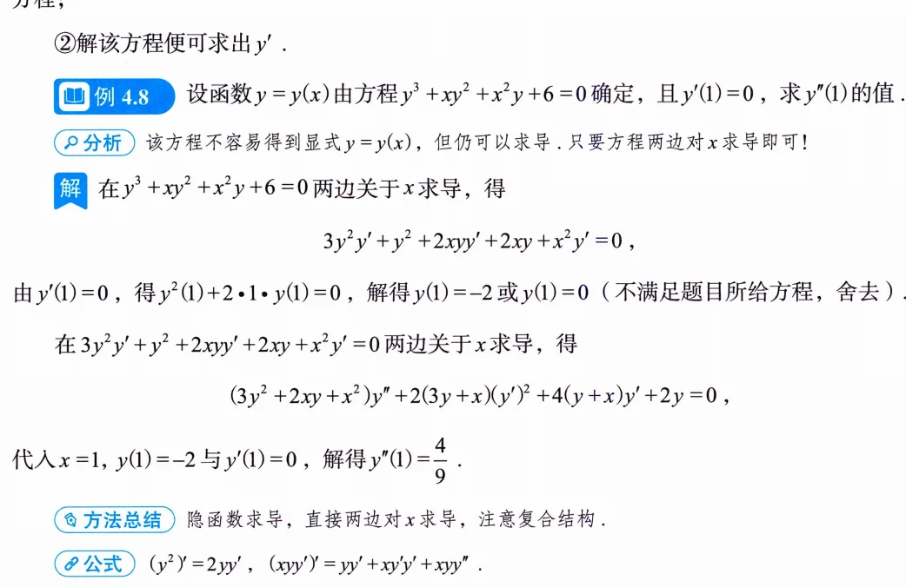
思路 \(y=y(x)\) 由 \(y^3+xy^2+x^2y+6=0\) 确定，\(y'(1)=0\)，求 \(y''(1)\)。方程两边对 \(x\) 求导，\(y\) 是中间变量。由 \(y'(1)=0\) 先解 \(y(1)\)：代入原方程 \(y(1)=-2\) 可用，\(y(1)=0\) 不满足原方程，舍去。
要点 一阶：\(3y^2y'+y^2+2xyy'+2xy+x^2y'=0\)。二阶：\((3y^2+2xy+x^2)y''+2(3y+x)(y')^2+4(y+x)y'+2y=0\)，代入 \(x=1\)、\(y(1)=-2\)、\(y'(1)=0\)，得 \(y''(1)=\dfrac49\)。
注 先代入已知条件再解方程，比硬解出 \(y'\) 的一般式省力得多——隐函数求二阶导的固定节奏。
例4.9 参数方程二阶导
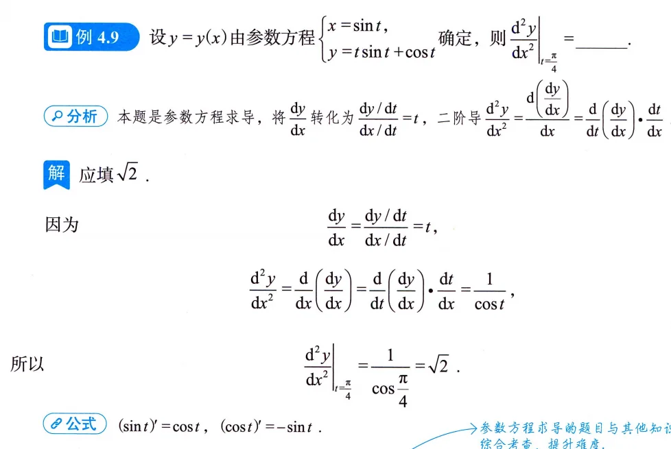
思路 \(x=\sin t\)，\(y=t\sin t+\cos t\)，求 \(\dfrac{\mathrm{d}^2y}{\mathrm{d}x^2}\Big|_{t=\pi/4}\)。先求一阶：\(\dfrac{\mathrm{d}y}{\mathrm{d}t}=t\cos t\)，\(\dfrac{\mathrm{d}x}{\mathrm{d}t}=\cos t\)，干净得很，\(\dfrac{\mathrm{d}y}{\mathrm{d}x}=t\)。
要点 \(\dfrac{\mathrm{d}^2y}{\mathrm{d}x^2}=\dfrac{\mathrm{d}}{\mathrm{d}t}\left(\dfrac{\mathrm{d}y}{\mathrm{d}x}\right)\cdot\dfrac{\mathrm{d}t}{\mathrm{d}x}=\dfrac{1}{\cos t}\)，代入 \(t=\dfrac{\pi}{4}\) 得 \(\sqrt{2}\)。
注 二阶导的分母是 \(\dfrac{\mathrm{d}x}{\mathrm{d}t}\)，不是 \(\dfrac{\mathrm{d}^2x}{\mathrm{d}t^2}\)；"再对 \(t\) 求导、除以 \(\frac{\mathrm{d}x}{\mathrm{d}t}\)"这个动作别漏。
例4.10 参数方程 + 隐函数综合
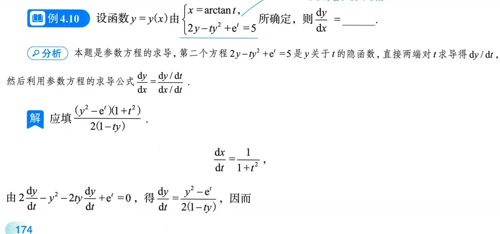
思路 \(x=\arctan t\)，\(y=y(t)\) 由 \(2y-ty^2+\mathrm{e}^t=5\) 确定，求 \(\dfrac{\mathrm{d}y}{\mathrm{d}x}\)。第二个方程是 \(y\) 关于 \(t\) 的隐函数，两边对 \(t\) 求导解出 \(\dfrac{\mathrm{d}y}{\mathrm{d}t}\)，再和 \(\dfrac{\mathrm{d}x}{\mathrm{d}t}\) 一拼。
要点 \(\dfrac{\mathrm{d}x}{\mathrm{d}t}=\dfrac{1}{1+t^2}\)，\(\dfrac{\mathrm{d}y}{\mathrm{d}t}=\dfrac{y^2-\mathrm{e}^t}{2(1-ty)}\)，所以
\[ \frac{\mathrm{d}y}{\mathrm{d}x}=\frac{(y^2-\mathrm{e}^t)(1+t^2)}{2(1-ty)}. \]
注 书里方法总结的原话："本题是一个综合型求导题目，根据它的类型套用相应公式"（印P175）——综合题的做法就一句：认清每个方程的类型，各套各的公式。
例4.11 幂指函数入门：x 的 x 次方
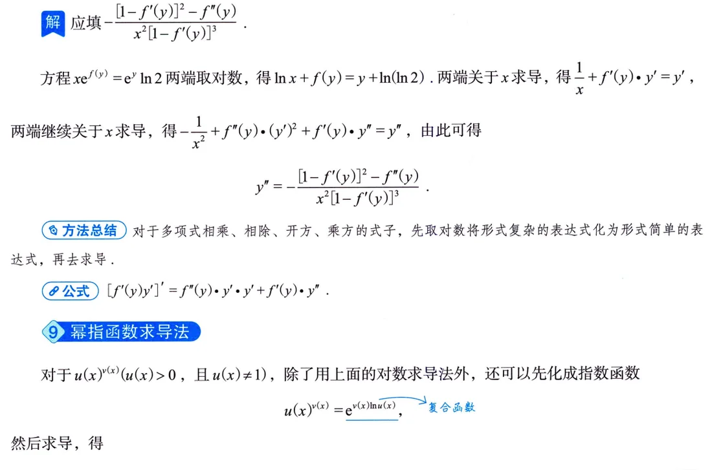
思路 \(y=x^x\ (x>0)\)，底数、指数都在动，化 \(y=\mathrm{e}^{x\ln x}\) 后按复合函数求导。
要点
\[ y'=\mathrm{e}^{x\ln x}\,(x\ln x)'=x^x\left(\ln x+1\right), \]
其中用到一个小导数 \((x\ln x)'=\ln x+1\)（书里专门加了批注）。
注 幂指函数的答案"原样保留"最清晰：把 \(\mathrm{e}^{x\ln x}\) 写回 \(x^x\)，括号里是两项之和——漏掉 \(1\) 或漏掉 \(\ln x\) 都是最常见的错法。
例4.12 对数求导法：三因式开方
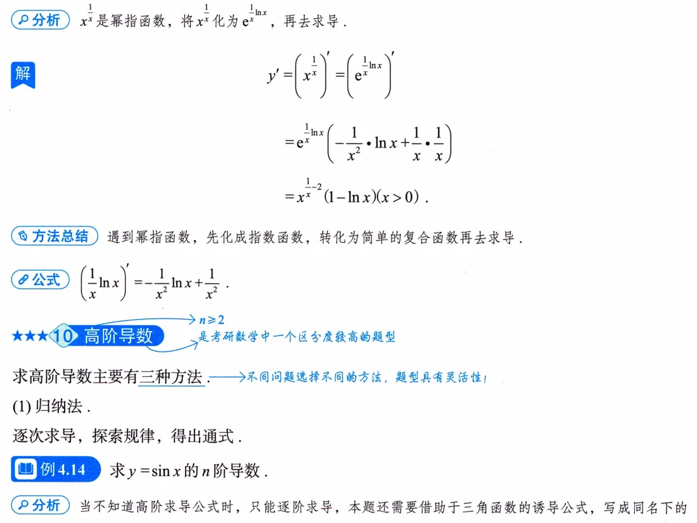
思路 \(y=(x-1)\sqrt[3]{\dfrac{(x-2)^2}{x-3}}\)，相乘、开方、相除占全了，正中对数求导法的靶心。两边取绝对值再取对数。
要点
\[ \ln|y|=\ln|x-1|+\frac{2}{3}\ln|x-2|-\ln|x-3|, \]
两边对 \(x\) 求导（\(y\) 是中间变量）：
\[ \frac{y'}{y}=\frac{1}{x-1}+\frac{2}{3(x-2)}-\frac{1}{x-3},\qquad y'=y\cdot\left[\frac{1}{x-1}+\frac{2}{3(x-2)}-\frac{1}{x-3}\right]. \]
注 硬展开三因式乘积求导要写半页，取对数后每项各求各的——这就是"乘除变加减"的实战价值；开方系数 \(\frac23\) 别抄丢。
例4.13 幂指函数进阶：(sin x) 的 ln x 次方
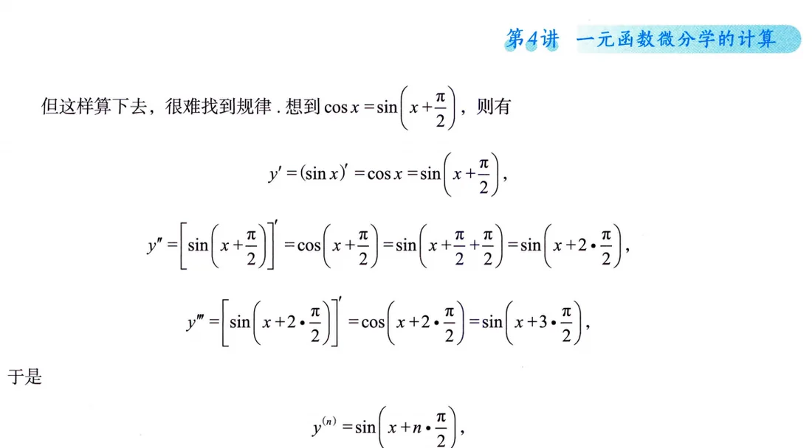
思路 \(y=(\sin x)^{\ln x}\ (x>0)\)，还是化 \(\mathrm{e}^{v\ln u}\)：\(y=\mathrm{e}^{\ln x\cdot\ln\sin x}\)，指数上是乘积，照样用乘法法则。
要点
\[ y'=(\sin x)^{\ln x}\left[\frac{\ln\sin x}{x}+\ln x\cdot\frac{\cos x}{\sin x}\right] =(\sin x)^{\ln x}\left[\frac{\ln\sin x}{x}+\ln x\cot x\right]. \]
注 严格说本题还需 \(\sin x>0\)（在正弦为正的区间内讨论）；指数里的 \(\ln\sin x\) 求导别忘除以 \(\sin x\)——复合到第二层才是多数人丢分的地方。
例4.14 归纳法：sin x 的 n 阶导数
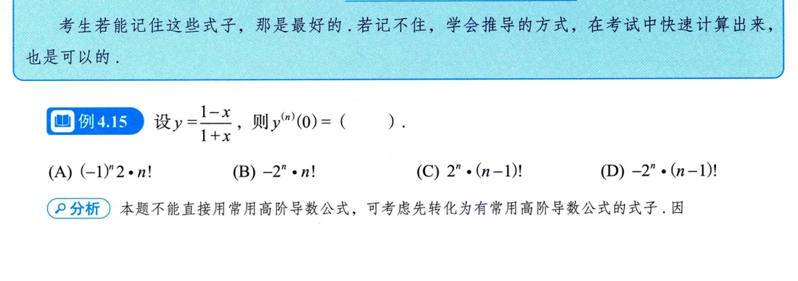
思路 \(y=\sin x\) 求 \(y^{(n)}\)。逐次求导后用诱导公式把 \(\cos x\)、\(-\sin x\) 统一写回 \(\sin(\cdot)\)，规律立刻现形。
要点
\[ y'=\cos x=\sin\left(x+\frac{\pi}{2}\right),\qquad y''=-\sin x=\sin\left(x+2\cdot\frac{\pi}{2}\right),\qquad y'''=-\cos x=\sin\left(x+3\cdot\frac{\pi}{2}\right), \]
归纳得 \(y^{(n)}=\sin\left(x+\dfrac{n\pi}{2}\right)\)。
注 同法可得 \((\cos x)^{(n)}=\cos\left(x+\dfrac{n\pi}{2}\right)\)；公式表里 \(\sin(ax+b)\) 那条就是这里再乘个 \(a^n\)。
例4.15 高阶导数先化归
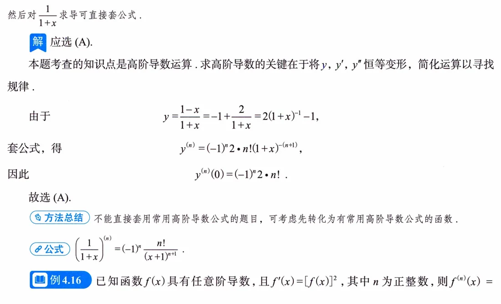
思路 \(y=\dfrac{1-x}{1+x}\) 求 \(y^{(n)}(0)\)。原式不在公式表里，先恒等变形 \(y=-1+\dfrac{2}{1+x}=2(1+x)^{-1}-1\)，化到能套 \(\left(\dfrac{1}{ax+b}\right)^{(n)}\) 的形状。
要点 \(y^{(n)}=(-1)^n 2\cdot n!\,(1+x)^{-(n+1)}\)，代 \(x=0\) 得 \(y^{(n)}(0)=(-1)^n 2\cdot n!\)，选 (A)。
注 求高阶导的关键动作：恒等变形（拆分项、凑公式），化到能套公式为止。
例4.16 抽象函数用关系式归纳
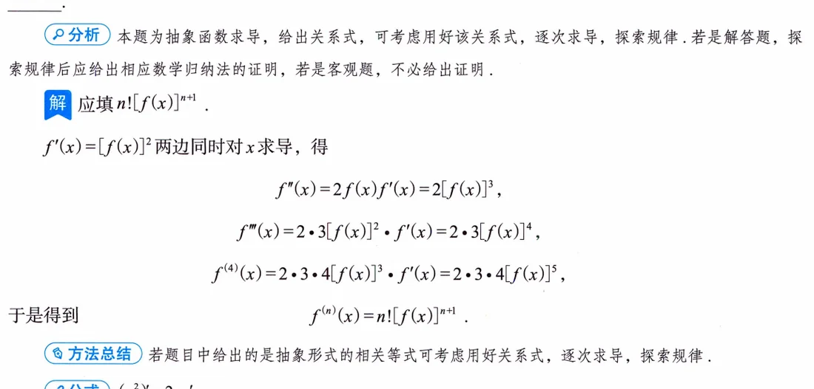
思路 已知 \(f'(x)=[f(x)]^2\)，求 \(f^{(n)}(x)\)。反复用这条关系式逐次求导：\(f''=2ff'=2f^3\)，\(f'''=2\cdot 3f^2f'=2\cdot 3f^4\)，……
要点 规律 \(f^{(n)}(x)=n!\,[f(x)]^{n+1}\)。客观题不必证明；解答题要用归纳法收尾：设 \(n=k\) 时成立，两边再对 \(x\) 求导得 \((k+1)!\,[f(x)]^{k+2}\)。
注 课后习题4.5 是同款（\(f'(x)=\mathrm{e}^{f(x)}\)，\(f(2)=1\)，答案 \((n-1)!\,\mathrm{e}^{n}\)），套路完全一样。
例4.17 莱布尼茨与归纳并用：e^x cos x
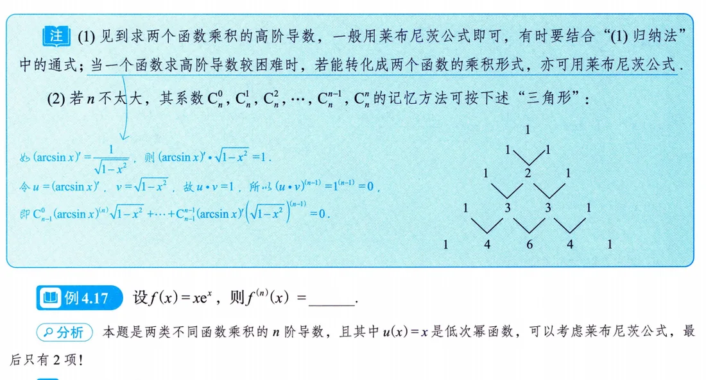
思路 \(y=\mathrm{e}^{x}\cos x\) 求 \(y^{(n)}\)。两个因式都无限阶可导，莱布尼茨和式不会截断，但每项形如 \(C_n^k\mathrm{e}^{x}\cos\left(x+\frac{k\pi}{2}\right)\)，可以合并；直接归纳也有干净的规律。
要点 莱布尼茨：
\[ y^{(n)}=\sum_{k=0}^{n}C_n^k\,\mathrm{e}^{x}\cos\left(x+\frac{k\pi}{2}\right). \]
归纳：\(y'=\mathrm{e}^{x}(\cos x-\sin x)=\sqrt{2}\,\mathrm{e}^{x}\cos\left(x+\frac{\pi}{4}\right)\)，每求导一次振幅乘 \(\sqrt2\)、相位加 \(\frac{\pi}{4}\)，故
\[ y^{(n)}=2^{\frac{n}{2}}\mathrm{e}^{x}\cos\left(x+\frac{n\pi}{4}\right). \]
注 这题是"莱布尼茨写得出、归纳法写得快"的典型——两条路互相验算，双保险。
例4.18 x²ln(1−x)：莱布尼茨与泰勒双法
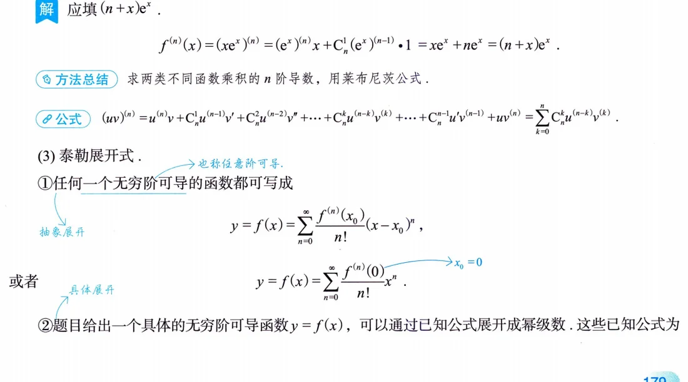
思路 \(f(x)=x^2\ln(1-x)\) 求 \(f^{(n)}(0)\ (n\geqslant 3)\)。\(x^2\) 三阶以上导数为零，莱布尼茨只剩三项，代 \(x=0\) 再消掉两项；泰勒法则用 \(\ln(1-x)=-\sum\limits_{n=1}^{\infty}\dfrac{x^n}{n}\) 比系数。
要点 莱布尼茨法：\(k=0,1\) 的项都带因子 \(x^2\) 或 \(x\)，代 \(x=0\) 归零，只剩 \(k=2\) 项：
\[ f^{(n)}(0)=C_n^2\cdot 2\cdot[\ln(1-x)]^{(n-2)}\Big|_{x=0}=n(n-1)\cdot(-1)^{n-3}(n-3)!=-\frac{n!}{n-2}. \]
泰勒法：\(f(x)=x^2\cdot\left(-\sum\limits_{n=1}^{\infty}\dfrac{x^n}{n}\right)=-\sum\limits_{n=1}^{\infty}\dfrac{x^{n+2}}{n}\)，\(x^n\)（\(n\ge 3\)）系数为 \(-\dfrac{1}{n-2}\)，故 \(f^{(n)}(0)=n!\cdot\left(-\dfrac{1}{n-2}\right)=-\dfrac{n!}{n-2}\)，两法同答。
注 \(x^k f(x)\) 型求 \(f^{(n)}(0)\) 两法通吃；课后习题4.8 是它的姊妹题（\(x^2\ln(1+x)\)，答案 \(\dfrac{(-1)^{n-1}n!}{n-2}\)），一负一正对着做。
例4.19 莱布尼茨与泰勒双法对照
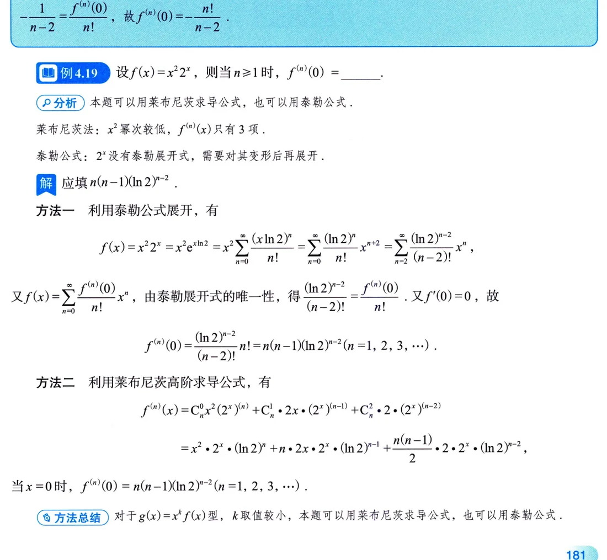
思路 \(f(x)=x^2 2^x\) 求 \(f^{(n)}(0)\)，两条路都通：莱布尼茨法看中 \(x^2\) 幂次低，和式只有 3 项；泰勒法要把 \(2^x\) 变形为 \(\mathrm{e}^{x\ln 2}\) 再展开（书里提醒：\(2^x\) 没有现成展开式，先变形）。
要点 泰勒法：\(f(x)=x^2\mathrm{e}^{x\ln 2}=\sum\limits_{n=2}^{\infty}\dfrac{(\ln 2)^{n-2}}{(n-2)!}x^n\)，与 \(\sum\dfrac{f^{(n)}(0)}{n!}x^n\) 比系数得 \(f^{(n)}(0)=n(n-1)(\ln 2)^{n-2}\)。莱布尼茨法：三项写出后令 \(x=0\)，前两项归零，同一结果；顺手记 \((2^x)^{(n)}=2^x(\ln 2)^n\)。
注 \(x^k f(x)\) 型求 \(g^{(n)}(0)\) 两法通吃，选顺手的；例4.18 是同款结构。
例4.20 隐函数综合：先代点值再解 y'
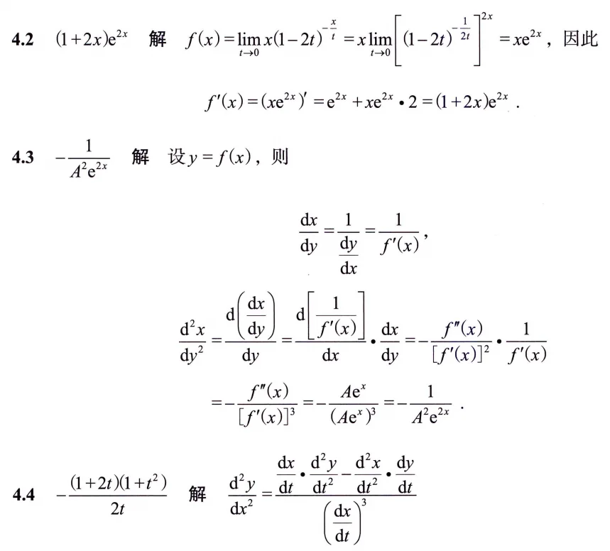
思路 设 \(y=y(x)\) 由方程 \(\sin(xy)=\ln(x+\mathrm{e})+\ln\dfrac{\mathrm{e}}{y}\) 确定，求 \(y'(0)\)。两步走：先令 \(x=0\) 定出 \(y(0)\)，再两边对 \(x\) 求导，代点值解出 \(y'(0)\)。
要点 \(x=0\)：左边 \(\sin 0=0\)，右边 \(\ln\mathrm{e}+\ln\dfrac{\mathrm{e}}{y(0)}=2-\ln y(0)\)，得 \(y(0)=\mathrm{e}^2\)。两边对 \(x\) 求导：
\[ \cos(xy)\,(y+xy')=\frac{1}{x+\mathrm{e}}-\frac{y'}{y}. \]
代入 \(x=0,\ y=\mathrm{e}^2\)：\(\mathrm{e}^2=\dfrac{1}{\mathrm{e}}-\dfrac{y'}{\mathrm{e}^2}\)，解得
\[ y'(0)=\mathrm{e}-\mathrm{e}^4. \]
注 \(\sin(xy)\) 对 \(x\) 求导是 \(\cos(xy)\cdot(y+xy')\)——\(xy\) 整体是中间变量；\(\ln\dfrac{\mathrm{e}}{y}\) 求导得 \(-\dfrac{y'}{y}\)。先把数字代干净、再解一元一次方程，是隐函数求点值的标准节奏。
习题精选（原书习题4）
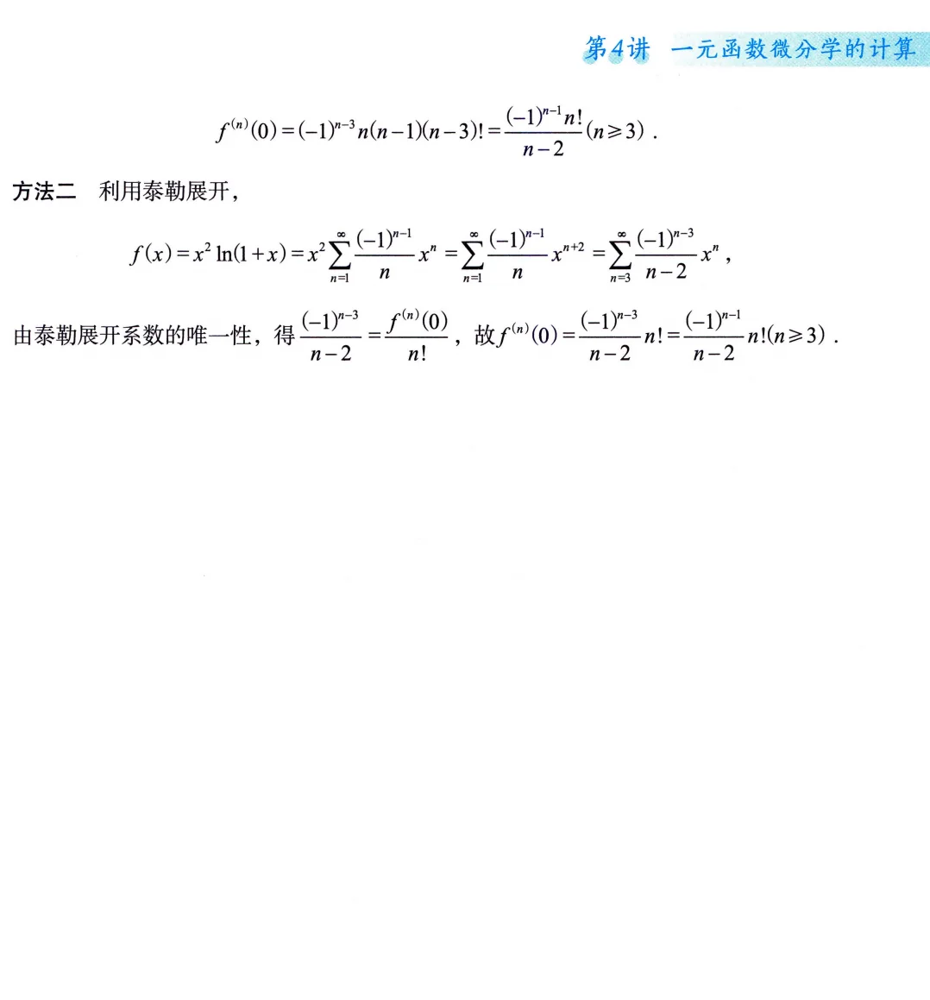
习题4.1（选择）\(h(x)=\mathrm{e}^{1+g(x)}\)，\(h'(1)=1\)，\(g'(1)=2\)，求 \(g(1)\)。由 \(h'(x)=\mathrm{e}^{1+g(x)}g'(x)\) 得 \(\mathrm{e}^{1+g(1)}=\dfrac12\)，故 \(g(1)=-1-\ln 2\)，选 (C)。
习题4.5 \(f'(x)=\mathrm{e}^{f(x)}\)，\(f(2)=1\)，求 \(f^{(n)}(2)\)。与例4.16 同款：\(f''=\mathrm{e}^{f}f'=\mathrm{e}^{2f}\)，\(f'''=2\mathrm{e}^{2f}f'=2\mathrm{e}^{3f},\cdots\)，\(f^{(n)}=(n-1)!\,\mathrm{e}^{nf}\)，故 \(f^{(n)}(2)=(n-1)!\,\mathrm{e}^{n}\)。
习题4.7（证明）设 \(g\) 二阶可导且 \(g(0)=g'(0)=0\)，\(f(x)=\begin{cases}g(x)/x,&x\neq0,\\ 0,&x=0,\end{cases}\) 证 \(f'\) 在 \(x=0\) 处连续。核心一行：\(f'(0)=\lim\limits_{x\to0}\dfrac{g(x)}{x^2}=\lim\limits_{x\to0}\dfrac{g'(x)}{2x}=\dfrac12\lim\limits_{x\to0}\dfrac{g'(x)-g'(0)}{x}=\dfrac12g''(0)\)——洛必达接导数定义，两章工具接力。
习题4.8 \(f(x)=x^2\ln(1+x)\) 求 \(f^{(n)}(0)\ (n\geqslant 3)\)，书上莱布尼茨、泰勒双解，答案 \(\dfrac{(-1)^{n-1}\,n!}{n-2}\)，与例4.18 恰成一对。
易错点与技巧
- \(f'[g(x)]\) 与 \(\{f[g(x)]\}'\) 不是一个东西：前者对中间变量求导，后者整体对 \(x\) 求导。求导符号位置看错，整题报废（印P169）。
- 求点上的导数值（如例4.3 的 \(\frac{\mathrm{d}y}{\mathrm{d}x}\big|_{x=\mathrm{e}}\)）不必先求复合函数表达式，先看求导表达式、再定落在哪一段（印P170）。
- \(\ln|x|\) 求导可以"视绝对值符号而不见"（印P167 批注）；但 \(|x\mathrm{e}^{-x}|\) 这类整个函数带绝对值的，分段点必须用定义验证左右导数——例4.6 里 \(x=0\) 就不可导（印P171–172）。
- 因式超过三个的乘积不要硬上乘法公式，拎出特殊因式化成两项相乘的"经典形式"（例4.1，印P168）。
- 分段点是否可导永远用左右导数判决，连续推不出可导：例4.5 两段都连续但 \(f'(0)\) 不存在（印P171）。
- 反函数二阶导 \(\varphi''(y)=-\frac{f''(x)}{[f'(x)]^3}\)：负号、立方一个都不能少；代入的是与 \(y\) 对应的 \(x\) 值（例4.7 里 \(y=3+\mathrm{e}\) 对应 \(x=1\)，印P172–173）。
- 隐函数求 \(y''\)：对求导后的方程再来一遍，中途先把已知点值（\(x_0,y_0,y'(x_0)\)）代进去再解，式子会瘦很多（例4.8，印P173）。
- 参数方程二阶导：先求 \(\frac{\mathrm{d}y}{\mathrm{d}x}\)（它是 \(t\) 的函数），再对 \(t\) 求导、除以 \(\frac{\mathrm{d}x}{\mathrm{d}t}\)。分母写成 \(\frac{\mathrm{d}^2x}{\mathrm{d}t^2}\) 是经典错误（印P174）。
- 幂指函数 \(u^v\) 别乱套幂函数或指数函数的单公式，老老实实化 \(\mathrm{e}^{v\ln u}\)；答案保留 \(u^v\) 原形、括号两项缺一不可（例4.11、4.13，印P175–177）。
- 对数求导法取对数时，开方的系数（如 \(\frac{2}{3}\ln|x-2|\)）和绝对值符号别丢；\(f(x)<0\) 的区间取 \(\ln|f(x)|\) 照样成立（例4.12，印P175–176）。
- 高阶导数先恒等变形化归到公式表（例4.15 的 \(\frac{1-x}{1+x}=2(1+x)^{-1}-1\)）；抽象关系式逐次求导找规律，客观题不必证、解答题用归纳法收尾（例4.16，印P178）。
- 泰勒展开求 \(f^{(n)}(0)\) 的合法性来自"展开式唯一性"，比较系数即可；注意 \(\ln(1+x)\) 的收敛域是 \(-1<x\leqslant 1\)、\(\arctan x\) 是 \([-1,1]\)，跟其他几个开区间不同（印P180–181）。
考点与方法补充（站注）
站注·真题大数据：本讲对应考纲"导数计算"，属于第一梯队考点——近15年几乎每年必考、年年都考（常以选择/填空直接考计算，或作为大题第一步），与几何应用合并统计是高数分值最大的一块。高频题型与本讲小节几乎一一对应：复合函数（含抽象函数）求导、隐函数求导、参数方程求导（数一数二）、高阶导数（莱布尼茨公式与泰勒比系数）。原书的例题配置印证了这个分布——例4.8（隐函数）、例4.9–4.10（参数方程）、例4.15–4.19（高阶导数）恰好各占一整节篇幅。
站注·张宇方法论：张宇反复强调"尽快结束纯听课阶段，自己动手最重要""计算能力是决定分数的第一因素"——本讲就是最不能眼高手低的一讲：公式表看着都会，例4.1、例4.12、例4.18 动手才算数。他给强化阶段的主题是"判定类型，做好计算"，本讲十节结构正是这个思想的预演：拿到函数先判型（复合？分段？隐函数？参数？幂指？），再套对应方法——例4.10 的方法总结"根据它的类型套用相应公式"（印P175）就是原话版的"先判型后计算"。
站注·训练路径：按基础30讲+300题的基础阶段配置，本讲学完应把300题对应章节整节做完，而不是挑着做；自检标准可以借用真题使用建议里的那条——随机抽5道求导计算题独立完成，正确率不到90%就回去重背公式表。书系路线是基础30讲→强化36讲，本讲的高阶导数三法在强化的泰勒专题、级数专题（L16）会反复回收。
站注·与前后讲的衔接：本讲是全书枢纽——向前接 L3（可导性概念：分段点求左右导数就是定义法的复用）；向后供 L5 几何应用（单调性、极值、凹凸性、渐近线全靠求导）、L6 中值定理（构造辅助函数本质是求导的逆运算，要熟悉 \([uv]'=u'v+uv'\) 的逆用）、L7 应用（相关变化率是链式法则的物理版）；L9 积分计算的分部积分与换元则是微分法则的逆用。所以这讲练不熟，后面每一讲都在还债。
知识清单自测
自测题
1. 求 \(y=x^{\sin x}\ (x>0)\) 的导数。
查看答案
解 幂指函数，化 \(y=\mathrm{e}^{\sin x\ln x}\)，链式求导：
\[ y'=x^{\sin x}\left(\cos x\cdot\ln x+\sin x\cdot\frac{1}{x}\right). \]
2. 设 \(y=y(x)\) 由方程 \(\mathrm{e}^y+xy=\mathrm{e}\) 确定，求 \(y'(0)\)。
查看答案
解 \(x=0\) 代入方程得 \(y=1\)。两边对 \(x\) 求导（\(y\) 是中间变量）：
\[ \mathrm{e}^y y'+y+xy'=0. \]
代入 \(x=0,\ y=1\)，得 \(y'(0)=-\dfrac{1}{\mathrm{e}}\)。
3. 设 \(y=y(x)\) 由 \(\begin{cases} x=\ln(1+t^2), \\ y=t-\arctan t \end{cases}\) 确定，求 \(\dfrac{\mathrm{d}y}{\mathrm{d}x}\)。
查看答案
解 \(\dfrac{\mathrm{d}x}{\mathrm{d}t}=\dfrac{2t}{1+t^2}\)，\(\dfrac{\mathrm{d}y}{\mathrm{d}t}=1-\dfrac{1}{1+t^2}=\dfrac{t^2}{1+t^2}\)，故
\[ \frac{\mathrm{d}y}{\mathrm{d}x}=\frac{\mathrm{d}y/\mathrm{d}t}{\mathrm{d}x/\mathrm{d}t}=\frac{t}{2}. \]
4. 设 \(y=\dfrac{1}{2x+3}\)，求 \(y^{(n)}\)。
查看答案
解 套 \(\left(\dfrac{1}{ax+b}\right)^{(n)}=(-1)^n a^n\dfrac{n!}{(ax+b)^{n+1}}\)，取 \(a=2,\ b=3\)：
\[ y^{(n)}=(-1)^n 2^n\frac{n!}{(2x+3)^{n+1}}. \]
5. 设 \(f(x)=x^2\mathrm{e}^{-x}\)，求 \(f^{(n)}(x)\)。
查看答案
解 莱布尼茨公式，\(x^2\) 幂次低，只有三项：
\[ f^{(n)}(x)=x^2(-1)^n\mathrm{e}^{-x}+2nx(-1)^{n-1}\mathrm{e}^{-x}+n(n-1)(-1)^{n-2}\mathrm{e}^{-x}, \]
整理得
\[ f^{(n)}(x)=(-1)^n\mathrm{e}^{-x}\left[x^2-2nx+n(n-1)\right]. \]
6. 设 \(y=f(x)=\ln(1+x)\)，\(x>-1\)，其反函数为 \(x=\varphi(y)\)，求 \(\varphi''(0)\)。
查看答案
解 \(y=0\) 对应 \(x=\mathrm{e}^0-1=0\)。\(f'(x)=\dfrac{1}{1+x}\)，\(f''(x)=-\dfrac{1}{(1+x)^2}\)，套 \(\varphi''(y)=-\dfrac{f''(x)}{[f'(x)]^3}\)：
\[ \varphi''(0)=-\frac{-\frac{1}{(1+0)^2}}{\left(\frac{1}{1+0}\right)^3}=1. \]